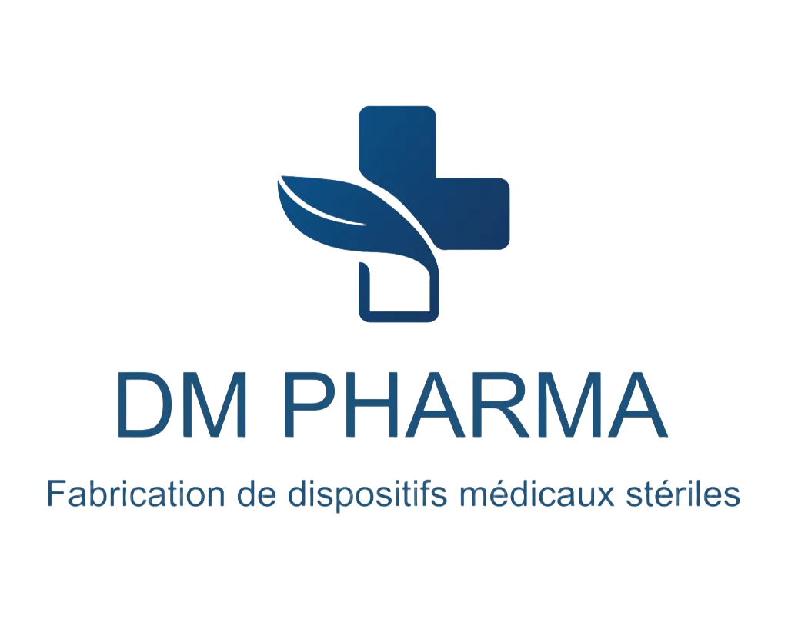
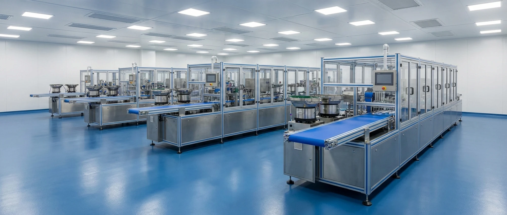
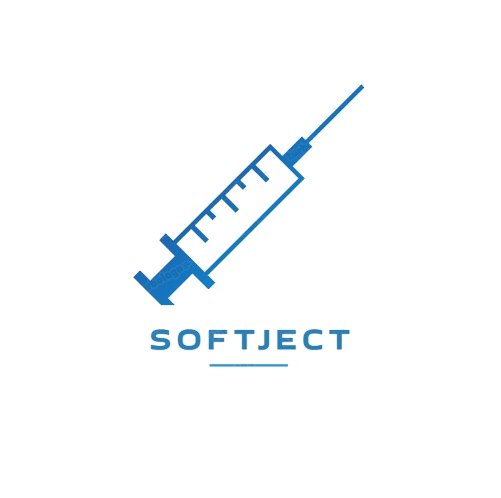
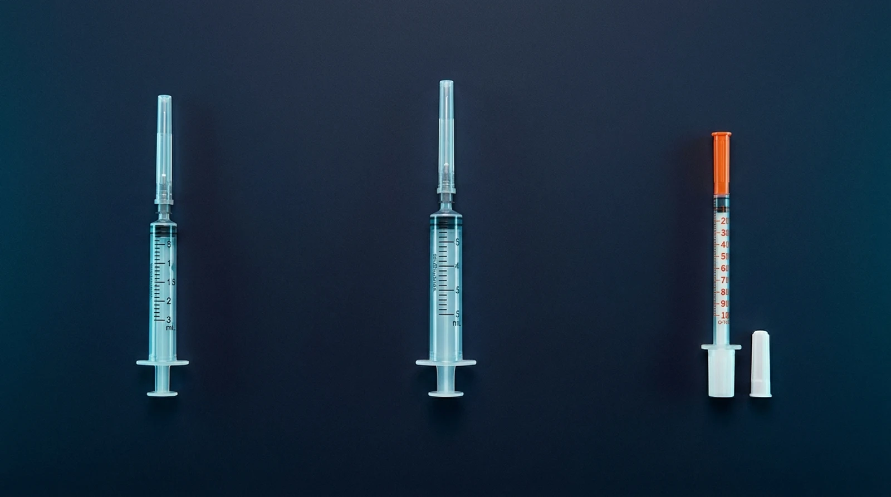

Seringue stérile 3 ml
Format trois pièces à usage unique, destiné aux actes courants d’aspiration et d’injection.


FABRIQUÉ EN TUNISIE
DM PHARMA est un laboratoire industriel tunisien spécialisé dans la conception et la fabrication de dispositifs médicaux stériles à usage unique. Notre engagement repose sur la qualité, l’innovation et le respect des normes internationales afin d’offrir des solutions fiables aux professionnels de santé.
DM PHARMA
Notre ambition est de fournir au marché tunisien et aux partenaires régionaux des dispositifs fiables, fabriqués dans un environnement maîtrisé et selon des processus documentés.
NOTRE GAMME


Format trois pièces à usage unique, destiné aux actes courants d’aspiration et d’injection.
Format trois pièces à usage unique pour les besoins cliniques courants de plus grand volume.
Disponible en formats 0.5 ml et 1 ml gradués en unités, dédiés à l’administration d’insuline.
Visuels de présentation. Les caractéristiques contractuelles figurent uniquement sur les fiches techniques approuvées.
OUTIL INDUSTRIEL
Nos lignes de production automatisées intègrent les technologies les plus avancées pour le moulage, l’assemblage, le conditionnement et la stérilisation des dispositifs médicaux, garantissant une qualité constante et une traçabilité complète.
QUALITÉ & CONFORMITÉ
Notre système est construit autour de la maîtrise des risques, de la traçabilité et de la validation des procédés.
Mise en place de pratiques documentées pour une production maîtrisée, reproductible et traçable.
Certification pour le périmètre de fabrication des dispositifs médicaux.
MONASTIR
Fondée par le Dr. Malik Khéfacha, DM PHARMA est une entreprise tunisienne spécialisée dans la fabrication de dispositifs médicaux stériles à usage unique. Nous disposons de salles blanches ISO 7 et ISO 8 conformes aux normes internationales, ainsi que d’équipements de dernière génération garantissant qualité, sécurité et performance.
Ouvrir dans Google Maps↗CONTACT
Distributeurs, établissements de santé et partenaires industriels : notre équipe vous répond.